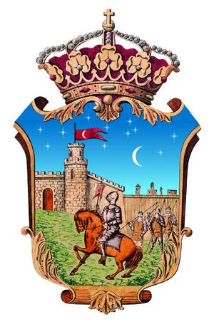

The origin of the city of Guadalajara is still a mystery although it suggests that might be in a small settlement on the banks of the river Henares. This town was called by that time Arriaca city of Basque origin who was revered by Roman historians. Another theory could be valid speaks Carae city, a settlement on the banks of the river Henares where caves exist. This settlement was really hard to be conquered by the Romans and is spoken in several books of the time. Hence until 2 or 3 centuries Guadalajara people were called.
While the Roman and Visigotico period are hardly any signs in the city of Guadalajara, as can be the bridge of Roman origin.
Whether of the old Muslim city called Wad-al-Hayara until the conquest by the Christians over the year 1085.
The city extended from the Plaza de Santo Domingo to the river Henares separated by two ravines, the Alamin and San Antonio.
This time in the city are the ruins of the Alcazar,
currently undergoing archaeological research and restoration project, The Tower of Alvarfáñez near the present Infantado´s palace .
Wad-al-ayara pass to be called Gudadalfaiara and later became a few more names to reach its current name.

On the opposite side the Tower of the Alamín where the medieval museum Guadalajara and La Puerta de Bejanque is located. The rest of the wall was destroyed most in the nineteenth century after reforms to open up the city.
The most important mosques in this time one were in the Plaza de los Caidos, opposite the palace Infantado which it was later converted into a church and finally destroyed. And another mosque Santa Maria , current basilica of Guadalajara.
The city had a large population of Muslim origin that stretched from the gate of the city on the Henares River. Whose name was the Alcallería and already inside the city around the mosque whose inhabitants had some significance around the hierarchy was ruling the town. In addition there were a large number of artisans and sellers of spices and edible in this area called Almagin. Hidden in the Woods, next to the ravine Alamin was another large Muslim community, it is believed it could be less resources than lived inside and many of these people were traveling on the peninsula.
Guadalajara se encuadraba en el reino taifa de Toledo, junto con ciudades de renombre en esa época como Atienza, Siguenza..
Guadalajara form part of the Taifa kingdom of Toledo, along with renowned cities at that time as Atienza, Siguenza .. Around the 1078 Castilla was in the hands of Sancho III, son of Fernando Fernando I. At this time I had separated the conquered in three parts, Castilla, Leon and Galicia area. Due to the death of Sancho in the siege of Zamora, his brother Alfonso is named king (Alfonso VI). It is when this king is humiliated by several Castilian warriors, the most famous Cid, Rodrigo Diaz de Vivar later was banished by the king by respond. Here is the legend of the conquest of Guadalajara.
El Cid after numerous battles and conquest projects distributed tasks among its loyal followers. One of them, his cousin, Minaya Alvar Fañez which will be responsible for the conquest of Guadalajara.
This was taken the night of San Juan and there are some theories that say that the current coat of Guadalajara is the day of the conquest.
however this theory is not true because by that time many cities carried the castle of the city as an emblem and the gentleman could be a generic gentleman.
After the period of Arab occupation would come a period of Christian occupation in which Muslims now be integrated into the city to live with Jews and Christians.
To prevent the Muslim population was greater were sent occasionally Christian settlers from other areas.
Until the fifteenth century were many churches which were built in Guadalajara.
Many of them were destroyed in later centuries to disappear or to moved or move to another building:
Conserved :
Destroyed:
Moved :
In addition of these churchs it existed a institution called Cabildo de Abades it was part of the clerics of the town. This chapel was placed near of the Alcázar.
© 2016 - All Rights Reserved - Diseñada por Sergio López Martínez
El sitio se mantiene gracias a la publicidad, por favor Desactiva Adblock para seguir navegando
He desactivado Adblock![[Valid RSS]](https://www.onepointsync.com/wp-content/uploads/2016/08/valid-rss-rogers.png "Validate my RSS feed")